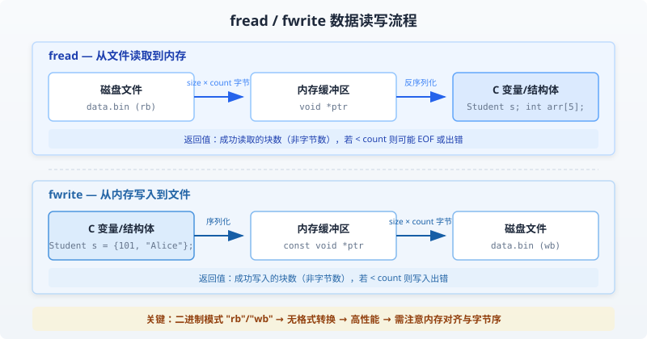

C File I/O
Previous chapter we explained how the C language handles standard input and output devices. This chapter will introduce how C programmers create, open, and close text files or binary files.
A file, whether it is a text file or a binary file, represents a series of bytes. The C language not only provides top-level functions, but also low-level (OS) calls to handle files on storage devices. This chapter will explain the important calls for file management.
Open a File
You can usefopen( )The function used to create a new file or open an existing file. This call initializes a typeFILEan object of typeFILEthat contains all the necessary information to control the stream. Below is the prototype of this function call:
FILE *fopen( const char *filename, const char *mode );
Here,filenameis a string used to name the file; the access modemodeThe value can be one of the following values:
| Mode | Description |
|---|---|
| r | Opens an existing text file for reading. |
| w | Opens a text file for writing. If the file does not exist, a new file is created. Here, your program will write content from the beginning of the file. If the file exists, its contents are cleared (i.e., the file length is truncated to 0). |
| a | Opens a text file for writing in append mode. If the file does not exist, a new file is created. Here, your program will append content to the existing file contents. |
| r+ | Opens a text file for both reading and writing. |
| w+ | Opens a text file for both reading and writing. If the file already exists, it will be truncated to zero length; if the file does not exist, a new file will be created. |
| a+ | Opens a text file for both reading and writing. If the file does not exist, a new file will be created. Reading starts from the beginning of the file, while writing can only be in append mode. |
If you are dealing with binary files, use the following access modes to replace the access modes above:
"rb", "wb", "ab", "rb+", "r+b", "wb+", "w+b", "ab+", "a+b"
Close a File
To close a file, use the fclose( ) function. The prototype of the function is as follows:
int fclose( FILE *fp );
If the file is closed successfully,fclose( )The function returns zero; if an error occurs when closing the file, the function returnsEOFEOF. This function actually flushes the data in the buffer, closes the file, and releases all memory used for the file. EOF is defined in the header filestdio.hthe constant in.
The C standard library provides various functions to read and write files character by character or in the form of fixed-length strings.
Write to a File
The following is the simplest function for writing a character to a stream:
int fputc( int c, FILE *fp );
Functionfputc()Writes the character value of parameter c to the output stream pointed to by fp. If successful, it returns the written character; if an error occurs, it returnsEOFYou can use the following function to write a null-terminated string to a stream:
int fputs( const char *s, FILE *fp );
Functionfputs()the stringswrites to the output stream pointed to by fp. If successful, it returns a non-negative value; if an error occurs, it returnsEOFYou can also useint fprintf(FILE *fp,const char *format, ...)The function writes a string to the file. Try the following example:
Note:Please make sure you have a usabletmpdirectory. If the directory does not exist, you need to create it on your computer first.
/tmpThis is generally the temporary directory on Linux systems. If you are running on Windows, you need to change it to an existing directory in your local environment, for example: C:\tmp、D:\tmpetc.
Example
When the above code is compiled and executed, it creates a new file in the /tmp directorytest.txtand use two different functions to write two lines. Next, let's read this file.
Read from a File
The following is the simplest function to read a single character from a file:
int fgetc( FILE * fp );
fgetc()The function reads a character from the input file pointed to by fp. The return value is the character read; if an error occurs, it returnsEOFThe following function allows you to read a string from a stream:
char *fgets( char *buf, int n, FILE *fp );
Functionfgets()It reads n - 1 characters from the input stream pointed to by fp. It copies the read string to the bufferbuf, and appends anullcharacter to terminate the string.
If this function encounters a newline '\n' or the end-of-file EOF before reading the last character, it returns only the characters read, including the newline. You can also useint fscanf(FILE *fp, const char *format, ...)function to read strings from a file, but it stops reading when it encounters the first space or newline.
Example
When the above code is compiled and executed, it reads the file created in the previous section and produces the following results:
1: This 2: is testing for fprintf... 3: This is testing for fputs...
First,fscanf()The method only readThisbecause it encountered a space afterward. Next, callfgets()to read the remaining part until the end of the line. Finally, callfgets()Completely reads the second line.
Binary I/O functions
The following two functions are used for binary input and output:
size_t fread(void *ptr, size_t size, size_t count, FILE *stream); size_t fwrite(const void *ptr, size_t size, size_t count, FILE *stream);
freadandfwriteare the core functions in the C standard library for reading and writing binary file blocks. They directly operate on memory data blocks, avoiding the overhead of text format conversion, and are especially suitable for batch reading and writing of large files and structured data.
Parameter description
The four parameters have the same meaning in both functions, but the data flow direction is opposite:
| Parameter | Type | Description | fread behavior | fwrite behavior |
|---|---|---|---|---|
| ptr | void* / const void* | Memory buffer pointer | Read destination address (write to memory) | Data source address (read from memory) |
| size | size_t | Number of bytes per data block | Block size per read | Block size per write |
| count | size_t | Number of data blocks to read or write | Expected number of blocks to read | Expected number of blocks to write |
| stream | FILE* | Opened file pointer | Must be opened with "rb" | Must be opened with "wb" |
The actual number of bytes operated on issize × countthe return value is the number of blocks successfully read or written, not the number of bytes. If the return value is less than count, it may be caused by end-of-file (EOF) or a read/write error, which need to be checked separately.
Binary mode vs. text mode
When using fread/fwrite, you must open the file in binary mode; otherwise, data corruption may occur.
Why binary mode must be used
Text mode on Windows automatically converts newline characters\nConverted to\r\n, which will destroy the integrity of binary data.
On Linux/macOS, text mode and binary mode behave the same, but cross-platform code should explicitly use"b"flag to ensure portability.
Example
FILE *fp_read = fopen("data.bin", "rb"); // Binary read
FILE *fp_write = fopen("data.bin", "wb"); // Binary write
// Wrong approach: text mode (data may be corrupted on Windows)
FILE *fp_bad = fopen("data.bin", "r"); // Missing "b" flag
Comparison with text functions
Which function to choose depends on the data type and the requirement scenario:
| Features | fread / fwrite | fprintf / fscanf |
|---|---|---|
| Data processing method | Read and write binary data in memory as-is | Format-based conversion (number ↔ string) |
| Applicable scenarios | Structs, arrays, images, audio, etc. | Human-readable text such as configuration files, logs, reports, etc. |
| Performance | Fast, no conversion overhead | Slow, you need to parse the format string |
| Precision | No precision loss | Floating-point numbers may lose precision |
| Human-readable | No (binary format) | Yes (plain text format) |
Data read/write flowchart
The following figure shows the data flow between fread and fwrite and the file and memory:

Typical usage scenarios
Reading and writing struct data
This is the most common application scenario of fread/fwrite; you can read or write an entire structure as a single data block at once.
Example
#include <stdlib.h>
// Define student struct
// Note: must use a fixed-length array, cannot use char *name pointer member
typedef struct {
int id; // Student ID
char name[50]; // Name (fixed array, pointer not allowed)
float score; // Score
} Student;
int main() {
// ===== Write struct to file =====
Student s = {101, "Alice", 95.5f}; // Initialize data
FILE *fp = fopen("student.bin", "wb");
if (fp == NULL) {
perror("Failed to open file");
return 1;
}
// Write the entire struct as one block of data
size_t written = fwrite(&s, sizeof(Student), 1, fp);
if (written != 1) {
printf("Write failed\n");
}
fclose(fp);
// ===== Read struct from file =====
fp = fopen("student.bin", "rb");
if (fp == NULL) {
perror("Failed to open file");
return 1;
}
Student loaded; // Uninitialized, will be filled by fread
size_t read_count = fread(&loaded, sizeof(Student), 1, fp);
if (read_count != 1) {
printf("Read failed or end of file\n");
fclose(fp);
return 1;
}
printf("ID: %d, Name: %s, Score: %.1f\n", loaded.id, loaded.name, loaded.score);
fclose(fp);
return 0;
}
学号: 101, 姓名: Alice, 成绩: 95.5
Structs cannot contain pointer members (such aschar *name), because fwrite only saves the address value of the pointer, not the content of the string it points to. When read back, that address is no longer valid, resulting in a dangling pointer. The correct practice is to use a fixed-length array, such aschar name[50]。
Reading and writing array data
Arrays are stored contiguously in memory, so the entire array can be read or written at once.
Example
int main() {
// Raw data array
int data[] = {1, 2, 3, 4, 5};
int count = 5; // Number of array elements
// ===== Write array to file =====
FILE *fp = fopen("array.bin", "wb");
if (fp == NULL) {
perror("Failed to open file");
return 1;
}
// data is equivalent to &data[0], pointing to the first address of the array
fwrite(data, sizeof(int), count, fp);
fclose(fp);
printf("Written %d integers to array.bin\n", count);
// ===== Read array from file =====
int buffer[5] = {0}; // Initialize to 0 for easy verification of read results
fp = fopen("array.bin", "rb");
if (fp == NULL) {
perror("Failed to open file");
return 1;
}
size_t read_count = fread(buffer, sizeof(int), count, fp);
if (read_count < count) {
printf("Incomplete read: expected %d elements, got %zu elements"\n", count, read_count);
}
fclose(fp);
// Print the read result
printf("Data read: ");
for (int i = 0; i < count; i++) {
printf("%d ", buffer[i]);
}
printf("\n");
return 0;
}
已写入 5 个整数到 array.bin 读取到的数据: 1 2 3 4 5
Batch reading and writing large files
For large files, you should use a loop to read/write in chunks, avoiding loading all content into memory at once.
Example
#include <stdlib.h>
#define BUFFER_SIZE 1024 // Read/write 1KB each time, adjust as needed
// Efficient file copy function
// Return value: 0 indicates success, -1 indicates failure
int copy_file(const char *src, const char *dst) {
char buffer[BUFFER_SIZE]; // Intermediate buffer
FILE *in = fopen(src, "rb");
FILE *out = fopen(dst, "wb");
// Check whether both files opened successfully
if (!in) {
perror("Failed to open source file");
return -1;
}
if (!out) {
perror("Failed to open target file");
fclose(in); // Close the opened source file
return -1;
}
// Read in a loop, up to BUFFER_SIZE bytes each time
size_t n;
while ((n = fread(buffer, 1, BUFFER_SIZE, in)) > 0) {
// fwrite with size=1, count=n ensures the actual number of bytes read is written
if (fwrite(buffer, 1, n, out) != n) {
perror("Write failed");
fclose(in);
fclose(out);
return -1;
}
}
// Check whether reading ended due to an error (rather than normal EOF)
if (ferror(in)) {
perror("Read error");
fclose(in);
fclose(out);
return -1;
}
fclose(in);
fclose(out);
printf("File copied successfully: %s -> %s\n"\n", src, dst);
return 0;
}
int main() {
// Usage example: copy the runoob test file
copy_file("runoob_input.bin", "runoob_output.bin");
return 0;
}
文件复制成功: runoob_input.bin -> runoob_output.bin
The key to this mode isfreadReturns the actual number of bytes read, then usefwriteWrite only the number of bytes actually read, avoiding writing extra data at the end.
Key considerations
Return value checking
After calling fread/fwrite, you must check the return value to distinguish normal completion from abnormal conditions.
Example
int main() {
int buffer[100];
FILE *fp = fopen("data.bin", "rb");
if (fp == NULL) {
perror("Failed to open file");
return 1;
}
// Try to read 100 integers
size_t count = fread(buffer, sizeof(int), 100, fp);
if (count < 100) {
// Distinguish EOF from errors
if (feof(fp)) {
printf("End of file reached, actually read %zu elements\n"\n", count);
// At this point, we can continue processing the read data
} else if (ferror(fp)) {
perror("An error occurred during reading");
fclose(fp);
return 1;
}
} else {
printf("Successfully read all %zu elements\n", count);
}
fclose(fp);
return 0;
}
已到达文件末尾，实际读取 47 个元素
Struct read/write pitfalls
The memory layout of structures is affected by the compiler's alignment strategy, which may cause cross-platform compatibility issues.
Memory alignment inconsistency
With different compilers or different compilation options, the same structure may have different memory layouts.
Example
// Example problem: under default alignment, there will be 3 bytes of padding after char
typedef struct {
char c; // Occupies 1 byte, but there is padding after it
int i; // 4-byte alignment, actually starts at offset 4
} Mixed;
// Solution 1: use pragma pack to force compact alignment
#pragma pack(push, 1) // Save current alignment settings, set to 1-byte alignment
typedef struct {
char c; // Offset 0, occupies 1 byte
int i; // Offset 1, occupies 4 bytes (no padding)
} PackedMixed;
#pragma pack(pop) // Restore previous alignment settings
// Solution 2: manually serialize members one by one (the safest way)
// This method does not rely on compiler alignment and has the best cross-platform compatibility
int main() {
// Print the size difference between the two structs
printf("Default-aligned Mixed size: %zu bytes\n", sizeof(Mixed)); // Usually 8
printf("Compact-aligned PackedMixed size: %zu bytes\n", sizeof(PackedMixed)); // It is 5
return 0;
}
默认对齐 Mixed 大小: 8 字节 紧凑对齐 PackedMixed 大小: 5 字节
Recommended practiceFor cross-platform or long-term storage, prefer manual serialization (reading/writing member by member) over directly writing the structure to a file. This can completely avoid alignment and byte-order issues.
Pointer members are prohibited
This is one of the most common mistakes made by beginners.
Example
#include <string.h>
#include <stdlib.h>
// Incorrect example: struct contains a pointer member
typedef struct {
int id;
char *name; // Danger! fwrite only saves the pointer value (address), not the string content
} BadStudent;
// Correct example: use a fixed array
typedef struct {
int id;
char name[100]; // The actual data is stored in the struct, so it can be safely read and written
} GoodStudent;
int main() {
// Demonstrate the consequences of the wrong approach
BadStudent bs;
bs.id = 1;
bs.name = malloc(50);
strcpy(bs.name, "RUNOOB");
// Write BadStudent: at this point, the address of the name pointer is written, but the string content is not written
FILE *fp = fopen("bad.bin", "wb");
fwrite(&bs, sizeof(BadStudent), 1, fp);
fclose(fp);
// Read back BadStudent: the name pointer value is the address from a previous malloc in another process, completely invalid
BadStudent loaded;
fp = fopen("bad.bin", "rb");
fread(&loaded, sizeof(BadStudent), 1, fp);
fclose(fp);
// loaded.name is a dangling pointer; accessing it leads to undefined behavior!
free(bs.name);
printf("Demo complete, but the loaded name pointer is invalid\n");
return 0;
}
演示完成，但 load 出来的 name 指针是无效的
Buffer flush
C standard library I/O is buffered; critical data needs to be explicitly flushed to ensure persistence.
Example
int main() {
FILE *fp = fopen("critical.bin", "wb");
if (fp == NULL) {
perror("Failed to open file");
return 1;
}
int data[] = {1, 2, 3, 4, 5};
fwrite(data, sizeof(int), 5, fp);
// Method 1: Explicitly flush the buffer, data is immediately written to disk
fflush(fp);
printf("Use fflush to force flush to disk\n");
// Method 2: Automatically flush when closing the file (recommended)
// fclose automatically calls fflush internally
fclose(fp);
printf("fclose also automatically flushes the buffer\n");
return 0;
}
使用 fflush 强制刷新到磁盘 fclose 也会自动刷新缓冲区
File pointer positioning
Combining fseek and ftell enables random access to a file, reading data at specified positions as needed.
Example
typedef struct {
int id;
char name[50];
float score;
} Student;
int main() {
FILE *fp = fopen("students.bin", "rb");
if (fp == NULL) {
perror("Failed to open file");
return 1;
}
// Jump to the end of the file to get the file size
fseek(fp, 0, SEEK_END);
long file_size = ftell(fp);
printf("File size: %ld bytes\n", file_size);
// Calculate how many struct records are in the file
long record_count = file_size / sizeof(Student);
printf("Contains %ld student records\n", record_count);
// Skip to the 6th struct (index starts from 0, offset = 5 * sizeof(Student))
fseek(fp, sizeof(Student) * 5, SEEK_SET);
Student s;
fread(&s, sizeof(Student), 1, fp);
printf("Record #6: id=%d, name=%s\n", s.id, s.name);
fclose(fp);
return 0;
}
文件大小: 6000 字节 包含 100 条学生记录 第 6 条记录: id=106, name=RUNOOB
Summary of common errors
The following table summarizes the most common problems and correct practices when using fread/fwrite:
| Error type | Error symptom | Correct approach |
|---|---|---|
| Unchecked file pointer | Calling fread directly after fopen fails, causing a crash. | Always checkfp != NULL |
| Ignoring binary mode | Binary data corrupted by newline conversion under Windows. | Usage"rb" / "wb" |
| Confusing the number of blocks with the number of bytes | Treating the return value as the number of bytes, causing logic errors. | Remember that the return value is the number of blocks; number of bytes =Return value × size |
| Buffer Overflow | Insufficient allocated space, out-of-bounds write | Ensure buffer space ≥size × count |
| Struct contains pointers | Pointer address is invalid after reading back, resulting in a dangling pointer. | Use a fixed array or manually serialize each member. |
| Ignoring error checks | Failure to distinguish EOF from read errors, resulting in incomplete data. | Check the return value, usefeof() / ferror()Determine the cause |
| Data not synchronized | Program crash causes buffer data loss | After writing critical data, callfflush(fp) |